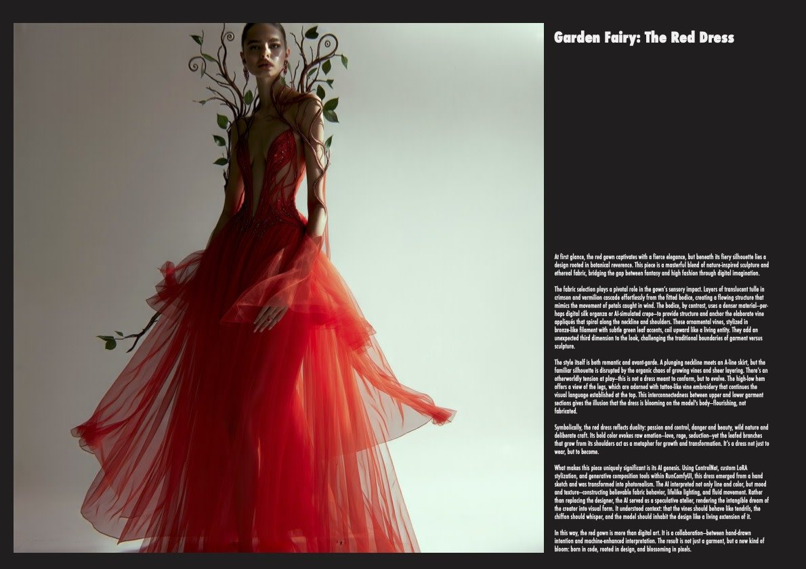
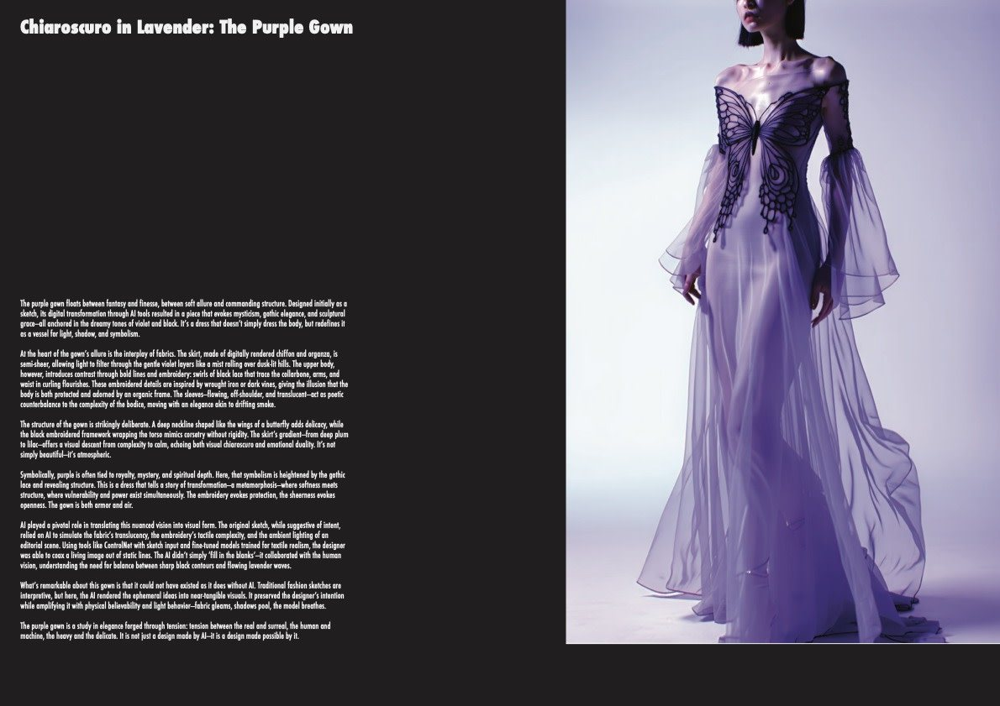

RunwAI
AI fashion film and magazine
- No.
- 03 / 10
- Section
- AI
- Discipline
- AI, film, editorial
- Year
- 2025
- Tools
- ComfyUI, LoRA
Garments designed, generated through a ComfyUI and LoRA pipeline, cut into a runway film and published as a magazine.
Magazine
Click a page, drag it, or use the arrow keys.
Cover and pages




Pipeline
Garments generated through ComfyUI and a LoRA, then cut into the runway film.